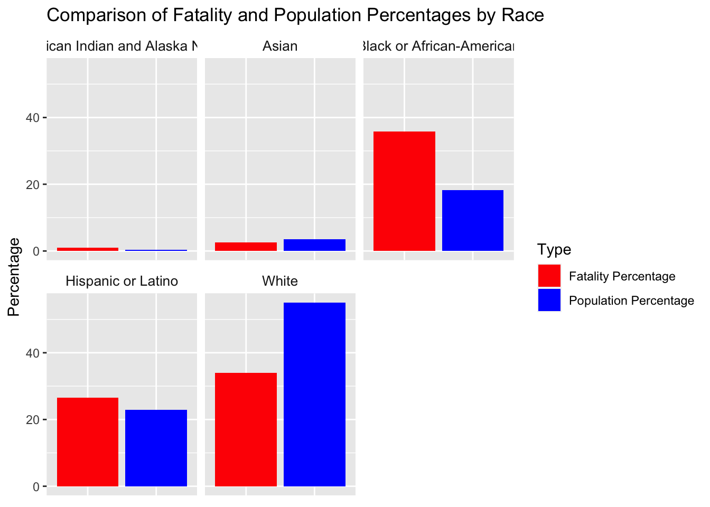
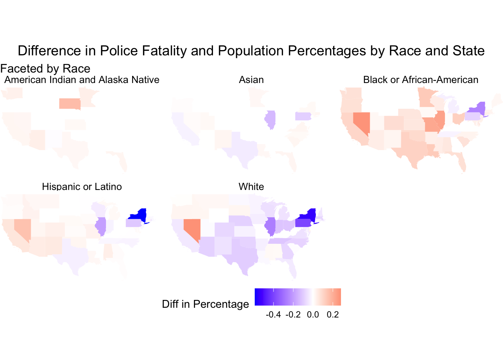

# library(tidyverse)
# print(getwd())
# data <- read_csv(here::here("dataset/loan_refusal_clean.csv"))
# load(here::here("dataset/loan_refusal.RData"))
# print(ls())Analysis
Here we provide a detailed analysis using more sophisticated statistics techniques.

This comes from the file analysis.qmd.
We describe here our detailed data analysis. This page will provide an overview of what questions you addressed, illustrations of relevant aspects of the data with tables and figures, and a statistical model that attempts to answer part of the question. You’ll also reflect on next steps and further analysis.
The audience for this page is someone like your class mates, so you can expect that they have some level of statistical and quantitative sophistication and understand ideas like linear and logistic regression, coefficients, confidence intervals, overfitting, etc.
While the exact number of figures and tables will vary and depend on your analysis, you should target around 5 to 6. An overly long analysis could lead to losing points. If you want you can link back to your blog posts or create separate pages with more details.
The style of this paper should aim to be that of an academic paper. I don’t expect this to be of publication quality but you should keep that aim in mind. Avoid using “we” too frequently, for example “We also found that …”. Describe your methodology and your findings but don’t describe your whole process.
Example of loading data
The code below shows an example of loading the loan refusal data set (which you should delete at some point).
Note on Attribution
In general, you should try to provide links to relevant resources, especially those that helped you. You don’t have to link to every StackOverflow post you used but if there are explainers on aspects of the data or specific models that you found helpful, try to link to those. Also, try to link to other sources that might support (or refute) your analysis. These can just be regular hyperlinks. You don’t need a formal citation.
If you are directly quoting from a source, please make that clear. You can show quotes using > like this
> To be or not to be.To be or not to be.
Rubric: On this page
You will
- Introduce what motivates your Data Analysis (DA)
- Which variables and relationships are you most interested in?
- What questions are you interested in answering?
- Provide context for the rest of the page. This will include figures/tables that illustrate aspects of the data of your question.
- Modeling and Inference
- The page will include some kind of formal statistical model. This could be a linear regression, logistic regression, or another modeling framework.
- Explain the ideas and techniques you used to choose the predictors for your model. (Think about including interaction terms and other transformations of your variables.)
- Describe the results of your modelling and make sure to give a sense of the uncertainty in your estimates and conclusions.
- Explain the flaws and limitations of your analysis
- Are there some assumptions that you needed to make that might not hold? Is there other data that would help to answer your questions?
- Clarity Figures
- Are your figures/tables/results easy to read, informative, without problems like overplotting, hard-to-read labels, etc?
- Each figure should provide a key insight. Too many figures or other data summaries can detract from this. (While not a hard limit, around 5 total figures is probably a good target.)
- Default
lmoutput and plots are typically not acceptable.
- Clarity of Explanations
- How well do you explain each figure/result?
- Do you provide interpretations that suggest further analysis or explanations for observed phenomenon?
- Organization and cleanliness.
- Make sure to remove excessive warnings, hide most or all code, organize with sections or multiple pages, use bullets, etc.
- This page should be self-contained, i.e. provide a description of the relevant data.
##Introduction In recent years, police-related fatalities have become a focal point of public and academic debate, underscoring critical concerns about racial disparities within law enforcement across the United States. This analysis seeks to explore the extent to which racial disparity, especially against Black individuals, contributes to the demographics of these fatalities. The urgency of this issue is amplified by ongoing societal calls for justice and reform, making it essential to understand the patterns and factors that drive these disparities.
#Thesis Statement This research posits that racial disparity is a significant factor influencing the demographics of police-related fatalities, with Black individuals experiencing disproportionately high mortality rates in comparison to other races across various cities.
#Research Questions To provide a structured exploration of this issue, this analysis will address the following key questions:
How do mortality rates from police-related fatalities among Black individuals compare to those of other races across different cities?
What factors might contribute to any observed disparities in these mortality rates?
Are there specific geographic or demographic contexts in which these disparities are more pronounced?
#Significance of the Analysis The findings of this analysis are intended to contribute to the broader dialogue on racial equity and law enforcement practices. By examining the intersection of race and police-related fatalities, this study aims to provide data-driven insights that could inform policy decisions and advocacy efforts aimed at reducing these disparities. Additionally, this analysis will serve as an educational resource for scholars, policymakers, and the public, fostering a deeper understanding of how racial dynamics shape outcomes in law enforcement encounters.
Through a combination of quantitative methods and statistical modeling, this analysis page will offer a detailed examination of the available data, aiming to present a clear and comprehensive picture of how race influences the risk of fatality in police interactions. The next sections will describe the data used for this analysis, the methodology employed, and the results obtained,thereby framing the context for a rigorous discussion on this critical social issue.
##Data Description This analysis leverages two key datasets:
Police Fatality Dataset & U.S. Cities Demographic Dataset
To load the dataset, run the attached R script “combining-datasets.R”.
source("combining-datasets.R")
rm(police_f,us_dem,us_dem_wid)After running this R script, the two datasets we used will be merged, cleared and loaded into your environment called police_dem. For more information on these two datasets and merging process, see the data page. data page.
##Exploratory Data Analysis (EDA)
Started by exploring the distribution of police-related fatalities by race.
fatalities_by_race <- police_dem |>
group_by(Race) |>
summarize(Fatalities = n()) |>
ungroup()
ggplot(fatalities_by_race, aes(x = reorder(Race, -Fatalities), y = Fatalities, fill = Race)) +
geom_bar(stat = "identity") +
labs(
title = "Distribution of Police-Related Fatalities by Race",
x = "Race",
y = "Number of Fatalities"
) +
theme(axis.text.x = element_text(angle = 45, hjust = 1))
As expected, the highest number of deaths occurred among blacks or African Americans.
The next step is to compare this with demographic data, and it would be interesting to examine the relationship between each racial group’s percentage of total deaths and their percentage of the total population of the sampled city. This would help to determine how specific racial groups are disproportionately affected.
fatalities_by_race_city_state <- police_dem |>
group_by(State, City, Race) |>
summarize(Fatalities = n(), .groups = 'drop')
population_by_race_city_state <- police_dem |>
group_by(State, City) |>
summarise(
White = first(White),
`Black or African-American` = first(`Black or African-American`),
`Hispanic or Latino` = first(`Hispanic or Latino`),
Asian = first(Asian),
`American Indian and Alaska Native` = first(`American Indian and Alaska Native`),
.groups = 'drop'
)|>
pivot_longer(cols = -c(City, State), names_to = "Race", values_to = "Population")
comparison_df <-
left_join(fatalities_by_race_city_state, population_by_race_city_state, by = c("State", "City", "Race"))|>
mutate(
FatalityPercentage = (Fatalities / sum(Fatalities)) * 100,
PopulationPercentage = (Population / sum(Population)) * 100,
diffinPercentage = FatalityPercentage - PopulationPercentage
)|>
arrange(desc(diffinPercentage))sum_df<- comparison_df|>
group_by(Race)|>
summarise(sumfatalityp = sum(FatalityPercentage),
sumpopulationp = sum(PopulationPercentage))|>
pivot_longer(cols = c(sumfatalityp, sumpopulationp), names_to = "Type", values_to = "Percentage") %>%
mutate(Type = recode(Type, 'sumfatalityp' = 'Fatality Percentage', 'sumpopulationp' = 'Population Percentage'))
ggplot(sum_df, aes(x = Type, y = Percentage, fill = Type)) +
geom_col(position = position_dodge(width = 0.8)) +
facet_wrap(~ Race) +
labs(
title = "Comparison of Fatality and Population Percentages by Race",
x = NULL,
y = "Percentage"
) +
scale_fill_manual(values = c("Fatality Percentage" = "red", "Population Percentage" = "blue")) +
theme(
axis.text.x = element_blank(),
axis.ticks.x = element_blank(),
strip.background = element_blank(),
strip.text.x = element_text(size = 10)
) 
library(tidycensus)
library(sf)states_sf <- get_decennial(geography = "state",
year = 2020,
variables = "H1_001N",
geometry = TRUE)
|
| | 0%
|
|= | 1%
|
|= | 2%
|
|== | 2%
|
|== | 3%
|
|=== | 4%
|
|=== | 5%
|
|==== | 6%
|
|===== | 6%
|
|===== | 7%
|
|===== | 8%
|
|====== | 8%
|
|====== | 9%
|
|======= | 10%
|
|======== | 11%
|
|======== | 12%
|
|========= | 13%
|
|========== | 14%
|
|========== | 15%
|
|=========== | 16%
|
|============ | 16%
|
|============ | 17%
|
|============= | 18%
|
|============= | 19%
|
|============== | 20%
|
|============== | 21%
|
|=============== | 21%
|
|=============== | 22%
|
|================ | 22%
|
|================ | 23%
|
|================= | 24%
|
|================== | 25%
|
|================== | 26%
|
|=================== | 27%
|
|=================== | 28%
|
|====================== | 31%
|
|======================= | 32%
|
|======================= | 33%
|
|======================= | 34%
|
|======================== | 34%
|
|======================== | 35%
|
|========================= | 35%
|
|========================= | 36%
|
|========================== | 37%
|
|========================== | 38%
|
|=========================== | 38%
|
|=========================== | 39%
|
|============================ | 40%
|
|============================= | 41%
|
|============================= | 42%
|
|============================== | 42%
|
|============================== | 43%
|
|=============================== | 44%
|
|=============================== | 45%
|
|================================ | 45%
|
|================================ | 46%
|
|================================= | 47%
|
|================================= | 48%
|
|================================== | 48%
|
|================================== | 49%
|
|=================================== | 50%
|
|=================================== | 51%
|
|==================================== | 51%
|
|===================================== | 52%
|
|===================================== | 53%
|
|====================================== | 54%
|
|====================================== | 55%
|
|======================================= | 55%
|
|======================================= | 56%
|
|======================================== | 57%
|
|========================================= | 58%
|
|========================================= | 59%
|
|========================================== | 60%
|
|========================================== | 61%
|
|=========================================== | 61%
|
|=========================================== | 62%
|
|============================================ | 63%
|
|============================================= | 64%
|
|============================================= | 65%
|
|============================================== | 65%
|
|============================================== | 66%
|
|=============================================== | 67%
|
|================================================ | 68%
|
|================================================ | 69%
|
|================================================= | 69%
|
|================================================= | 70%
|
|================================================== | 71%
|
|================================================== | 72%
|
|=================================================== | 72%
|
|=================================================== | 73%
|
|=================================================== | 74%
|
|==================================================== | 74%
|
|==================================================== | 75%
|
|===================================================== | 75%
|
|===================================================== | 76%
|
|====================================================== | 77%
|
|====================================================== | 78%
|
|======================================================= | 78%
|
|======================================================= | 79%
|
|======================================================== | 80%
|
|========================================================= | 81%
|
|========================================================= | 82%
|
|========================================================== | 82%
|
|========================================================== | 83%
|
|=========================================================== | 84%
|
|=========================================================== | 85%
|
|============================================================ | 85%
|
|============================================================ | 86%
|
|============================================================= | 86%
|
|============================================================= | 87%
|
|============================================================= | 88%
|
|============================================================== | 89%
|
|=============================================================== | 90%
|
|=============================================================== | 91%
|
|================================================================ | 91%
|
|================================================================ | 92%
|
|================================================================= | 92%
|
|================================================================= | 93%
|
|================================================================== | 94%
|
|================================================================== | 95%
|
|=================================================================== | 95%
|
|=================================================================== | 96%
|
|==================================================================== | 97%
|
|===================================================================== | 98%
|
|===================================================================== | 99%
|
|======================================================================| 100%state_level_comparison_df <- comparison_df %>%
group_by(State, Race) %>%
summarize(Diff_Percentage = mean(diffinPercentage, na.rm = TRUE), .groups = 'drop')
state_data_sf <- inner_join(states_sf, state_level_comparison_df, by = c("NAME" = "State"))state_data_sf %>%
ggplot() +
geom_sf(aes(fill = Diff_Percentage), color = NA) +
scale_fill_gradient2(
low = "blue", mid = "white", high = "red", # Adjust colors if needed
midpoint = 0,
limit = c(min(state_data_sf$Diff_Percentage, na.rm = TRUE), max(state_data_sf$Diff_Percentage, na.rm = TRUE)),
name = "Diff in Percentage",
na.value = "white"
) +
facet_wrap(~ Race) +
labs(
title = "Difference in Police Fatality and Population Percentages by Race and State",
subtitle = "Faceted by Race",
fill = "Diff in Percentage"
) +
theme_void() +
theme(
legend.position = "bottom",
plot.title = element_text(size = 14, hjust = 0.5),
plot.subtitle = element_text(size = 12),
strip.text = element_text(size = 10) # Adjust facet label text size
) +
coord_sf(xlim = c(-125, -67), ylim = c(24, 50), expand = FALSE)
##Modelling
model_data<- police_dem|>
group_by(City)|>
summarise(Fatalities = n(),
Median.Age = first(Median.Age),
Male.Population = first(Male.Population),
Female.Population = first(Female.Population),
Foreign.born = first(Foreign.born),
Average.Household.Size = first(Average.Household.Size),
White = first(White),
`Black or African-American` = first(`Black or African-American`),
`Hispanic or Latino` = first(`Hispanic or Latino`),
Asian = first(Asian),
`American Indian and Alaska Native` = first(`American Indian and Alaska Native`)
)|>
arrange(desc(Fatalities))
model_data <- na.omit(model_data)
print(model_data)# A tibble: 401 × 12
City Fatalities Median.Age Male.Population Female.Population Foreign.born
<chr> <int> <dbl> <int> <int> <int>
1 Los Ang… 252 35 1958998 2012898 1485425
2 Houston 179 32.6 1149686 1148942 696210
3 Las Veg… 133 37.5 310568 313201 127609
4 Chicago 91 34.2 1320015 1400541 573463
5 Dallas 78 32.6 639019 661063 326825
6 Phoenix 75 33.8 786833 776168 300702
7 Fresno 67 30 256130 263942 103453
8 Kansas … 61 35.9 228430 246931 37787
9 San Die… 59 34.5 693826 701081 373842
10 Long Be… 52 34.6 238159 236013 127764
# ℹ 391 more rows
# ℹ 6 more variables: Average.Household.Size <dbl>, White <int>,
# `Black or African-American` <int>, `Hispanic or Latino` <int>, Asian <int>,
# `American Indian and Alaska Native` <int>ggplot(model_data, aes(x = Fatalities)) +
geom_histogram(binwidth = 1, fill = 'blue', color = 'black')
The distrubution is highly skewed
ggplot(model_data, aes(x = Median.Age, y = Fatalities)) +
geom_point() +
geom_smooth(method = "lm")`geom_smooth()` using formula = 'y ~ x'
ggplot(model_data, aes(x = Male.Population, y = Fatalities)) +
geom_point() +
geom_smooth(method = "lm")`geom_smooth()` using formula = 'y ~ x'
ggplot(model_data, aes(x = Female.Population, y = Fatalities)) +
geom_point() +
geom_smooth(method = "lm")`geom_smooth()` using formula = 'y ~ x'
ggplot(model_data, aes(x = Foreign.born, y = Fatalities)) +
geom_point() +
geom_smooth(method = "lm")`geom_smooth()` using formula = 'y ~ x'
ggplot(model_data, aes(x = Average.Household.Size, y = Fatalities)) +
geom_point() +
geom_smooth(method = "lm")`geom_smooth()` using formula = 'y ~ x'
ggplot(model_data, aes(x = White, y = Fatalities)) +
geom_point() +
geom_smooth(method = "lm")`geom_smooth()` using formula = 'y ~ x'
ggplot(model_data, aes(x = `Black or African-American`, y = Fatalities)) +
geom_point() +
geom_smooth(method = "lm")`geom_smooth()` using formula = 'y ~ x'
ggplot(model_data, aes(x = Male.Population, y = Median.Age)) +
geom_point() +
geom_smooth(method = "lm")`geom_smooth()` using formula = 'y ~ x'
ggplot(model_data, aes(x = Female.Population, y = Median.Age)) +
geom_point() +
geom_smooth(method = "lm")`geom_smooth()` using formula = 'y ~ x'
ggplot(model_data, aes(x = Foreign.born, y = Median.Age)) +
geom_point() +
geom_smooth(method = "lm")`geom_smooth()` using formula = 'y ~ x'
ggplot(model_data, aes(x = Average.Household.Size, y = Median.Age)) +
geom_point() +
geom_smooth(method = "lm")`geom_smooth()` using formula = 'y ~ x'
ggplot(model_data, aes(x = White, y = Median.Age)) +
geom_point() +
geom_smooth(method = "lm")`geom_smooth()` using formula = 'y ~ x'
ggplot(model_data, aes(x = `Black or African-American`, y = Median.Age)) +
geom_point() +
geom_smooth(method = "lm")`geom_smooth()` using formula = 'y ~ x'
ggplot(model_data, aes(x = Female.Population, y = Male.Population)) +
geom_point() +
geom_smooth(method = "lm")`geom_smooth()` using formula = 'y ~ x'
ggplot(model_data, aes(x = Foreign.born, y = Male.Population)) +
geom_point() +
geom_smooth(method = "lm")`geom_smooth()` using formula = 'y ~ x'
ggplot(model_data, aes(x = Average.Household.Size, y = Male.Population)) +
geom_point() +
geom_smooth(method = "lm")`geom_smooth()` using formula = 'y ~ x'
ggplot(model_data, aes(x = White, y = Male.Population)) +
geom_point() +
geom_smooth(method = "lm")`geom_smooth()` using formula = 'y ~ x'
ggplot(model_data, aes(x = `Black or African-American`, y = Male.Population)) +
geom_point() +
geom_smooth(method = "lm")`geom_smooth()` using formula = 'y ~ x'